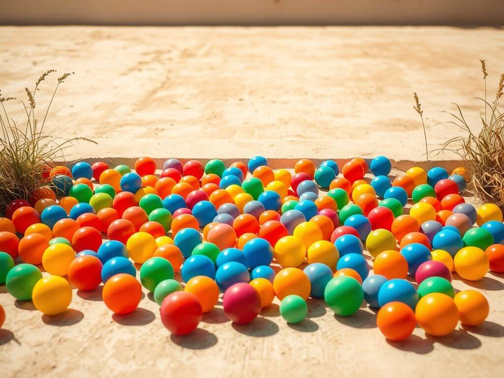

Fantasy Plinko
Enter the exhilarating world of Fantasy Plinko, where your strategic moves and quick decisions determine your success. Build your ideal Plinko setup, harness unique boosts, and aim for the highest multipliers. This is your chance to dominate the board and claim victory.
Why Fantasy Plinko is Unmatched
Fantasy Plinko redefines the classic game by combining skill, strategy, and competition. With customizable boards and real-time gameplay, you control the path to victory. Whether you’re a casual player or a pro strategist, there’s always a new challenge waiting.
Our platform offers advanced analytics, live performance tracking, and interactive features to enhance your gameplay. It’s time to put your skills to the test.
Join NowSkill and Precision Over Luck
In Fantasy Plinko, your success depends on strategic planning and precise actions. From choosing the best drop points to optimizing boosts, every decision matters.
This isn’t just about luck—it’s a game of foresight, analysis, and timing. Show off your mastery and lead the leaderboard.
Understanding the Game Format
Fantasy Plinko offers a variety of formats to keep gameplay exciting. Here are the main options:
Multiplier Challenge: Compete to achieve the highest multipliers by the end of the game. Strategic drops and boosts are key to winning.
Head-to-Head: Face off against another player by comparing scores. The higher cumulative total takes the win.
Timed Rounds: Score as much as possible within a set time limit. Precision and quick thinking are essential.
With options for solo play, group challenges, and global tournaments, there’s something for everyone.
Fantasy Plinko Tips and Strategies
To excel in Fantasy Plinko, preparation and strategy are essential. Consider these expert tips:
- Master the Drop: Analyze the board layout to select the best drop points for maximum multipliers.
- Use Boosts Wisely: Save your boosts for crucial moments to maximize their impact.
- Track Performance: Monitor your progress and adjust strategies as needed to stay ahead.
- Experiment: Test different setups and approaches to find what works best for you.
- Plan Ahead: Anticipate potential outcomes and make calculated moves for long-term success.
How to Get Started
Set Up Your Board
Customize your Plinko board with slots, obstacles, and multipliers for unique challenges.
Strategize Your Drops
Plan your drop points carefully to maximize your score and avoid penalties.
Activate Boosts
Use special boosts to overcome tricky sections and increase your potential rewards.
Compete and Win
Participate in tournaments, climb the leaderboards, and prove your dominance.
Fantasy Plinko Rules
1. Setting Up Your Game
To participate in Fantasy Plinko, players must set up their board and customize their gameplay experience. Here's what you need:
- Plinko Peg Board: Select a board layout with varying paths, obstacles, and scoring zones.
- Chips: Choose your set of chips—each with unique properties like weight, speed, or bounce.
- Modifiers: Add boosters or penalties to specific zones for more strategic depth.
2. Scoring System
Points in Fantasy Plinko are based on where your chips land and the strategies you employ. Here's the breakdown:
-
Basic Scoring:
- 10-50 points for landing in standard scoring zones.
- 100 points for hitting the jackpot zone.
- -20 points for landing in penalty zones.
-
Bonus Points:
- +25 points for landing in consecutive scoring zones.
- +50 points for executing a "perfect bounce" into a high-score area.
- +30 points for activating a bonus trigger on the board.
-
Penalties:
- -10 points for missing the board entirely.
- -15 points for hitting a penalty trigger.
3. Strategy Boosters
Enhance your gameplay by strategically deploying boosters:
- Precision Aim: Improves your chip's accuracy for one drop.
- Obstacle Overdrive: Temporarily disables board obstacles for smoother paths.
- Double Points: Doubles your score in high-value zones for a limited time.
4. Game Adjustments
Players can adjust their boards between rounds to optimize scoring opportunities. You may also swap out chips or modify obstacles based on game conditions. Use these adjustments to outplay your competition and climb the leaderboard!